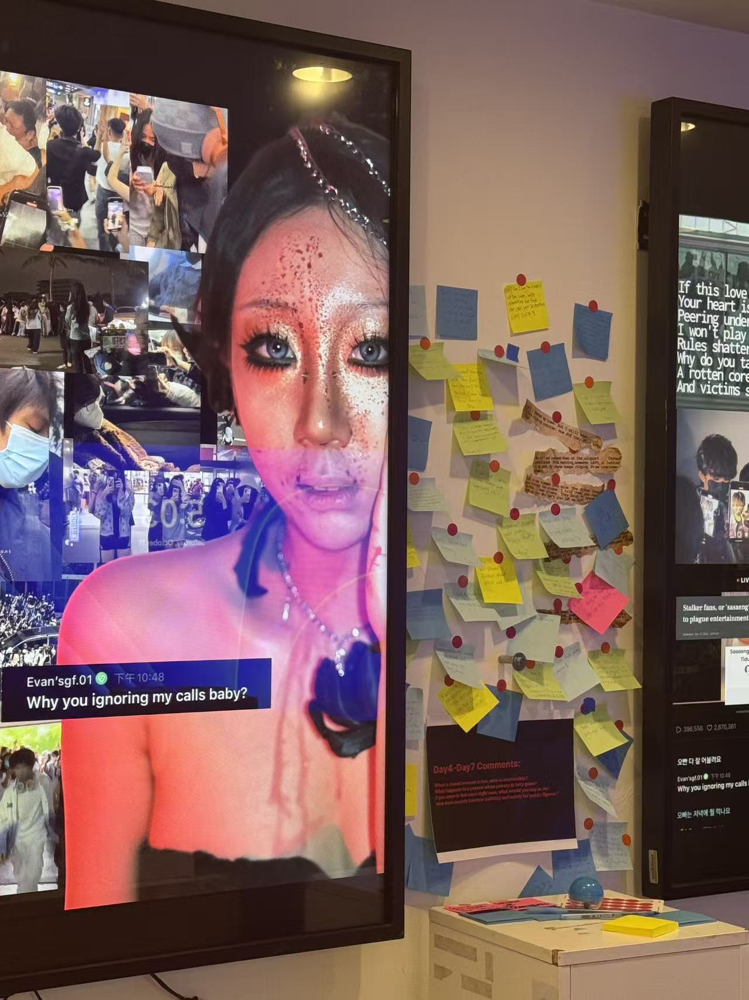
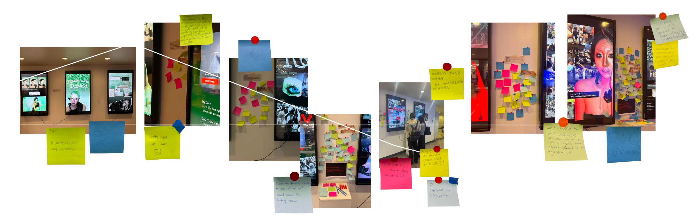
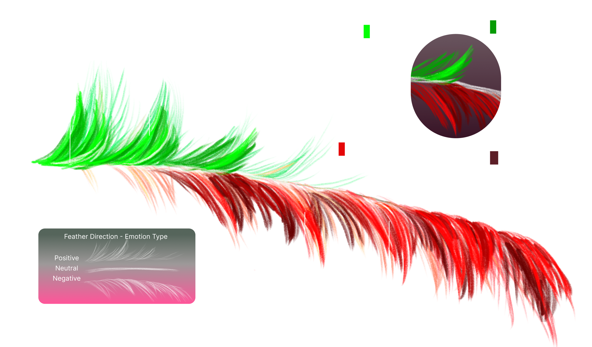

Overview
Suffocated Love (四面楚歌) is a seven-day interactive gallery installation that explores intimacy, visibility, and boundaries in celebrity culture. Each day, a new diary entry appears across three vertical screens — written in the first person as a celebrity living under constant public attention.
The tone shifts across seven days. Visitors read the diary, watch the images evolve from green to red, and respond by writing their thoughts on sticky notes placed around the screens. Their words become part of a living record of how we look at, follow, and imagine closeness with people we have never met.
The Chinese title 四面楚歌 means "surrounded on all sides" — a state of being enclosed by forces that arrive as love but feel like suffocation.

The Concept
The Persona
qiezbi_x — 6.7M FollowersThe diary is written as a fictional celebrity with 6.7M followers and 120.8M likes. The character is recognizable but unnamed — familiar enough to feel real.
The Format
7 Days, 3 ScreensThree vertical screens function like oversized phone displays. Each day a new entry appears. Visitors never see a completed story — only what has happened so far.
The Participation
Sticky Notes as ResponseVisitors write their thoughts or feelings on sticky notes and place them around the screens. Their words accumulate across the seven days, becoming a visible collective record.

The 7-Day Diary Arc
The installation is designed as an emotional progression. The color, tone, and imagery shift over seven days — from adoration to surveillance to shutdown.


Installation in Space
Three portrait-format screens are installed on a gallery wall, spaced like a triptych. Each one functions as a visual diary page — images, text, and collage layered as if on a phone screen scaled to human height.
Between and around the screens, sticky notes from visitors accumulate over seven days. The wall becomes a living document of audience response alongside the celebrity's diary.


Audience Response
Visitors were invited to write their thoughts or feelings on sticky notes and place them around the screens. Over seven days, over 100 notes accumulated. Some expressed empathy for the celebrity. Some expressed guilt. Some were defensive. Some were direct confessions about their own fan behavior.

.png)
.png)
.png)
.png)
.png)
.png)
.png)
.png)
Data Visualization
After the installation closed, the sticky notes were analyzed for emotional type and valence. The visualization maps each note across seven days, displayed as a feather form — green for positive, white for neutral, red for negative.
Days 1–2 show an overwhelmingly positive response. Day 4 is where the split begins. By Day 7, hard negative responses dominate — but soft negative and ambivalent notes persist alongside them. The audience was never unanimous.

Positive (Green)
Empathy, care, admiration. Viewers who connected emotionally with the persona and wished her well.
Neutral (White)
Observation, curiosity, reflection. Viewers who noted behavior without declaring a position.
Negative (Red)
Anger, defensiveness, obsession, guilt. Viewers who pushed back — or quietly recognized themselves.
Reflection
Suffocated Love demonstrates my ability to design experiences that unfold over time and involve real audience participation. The installation is not static — it accumulates. Each day adds new content, and the wall of sticky notes grows alongside it. The data visualization closes the loop by translating collective emotional response into a designed artifact.
This project taught me that experience design can operate at the scale of feeling rather than function. The most important moment was reading the sticky notes and discovering that visitors did not all feel the same thing — some were sad, some were defensive, some were honest about their own behavior. That ambiguity was the point. It is what made the project real.